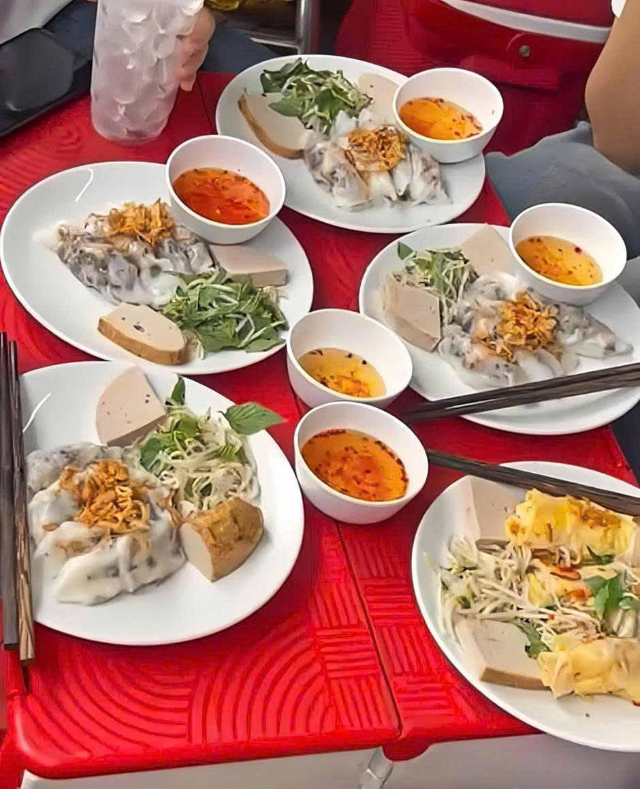
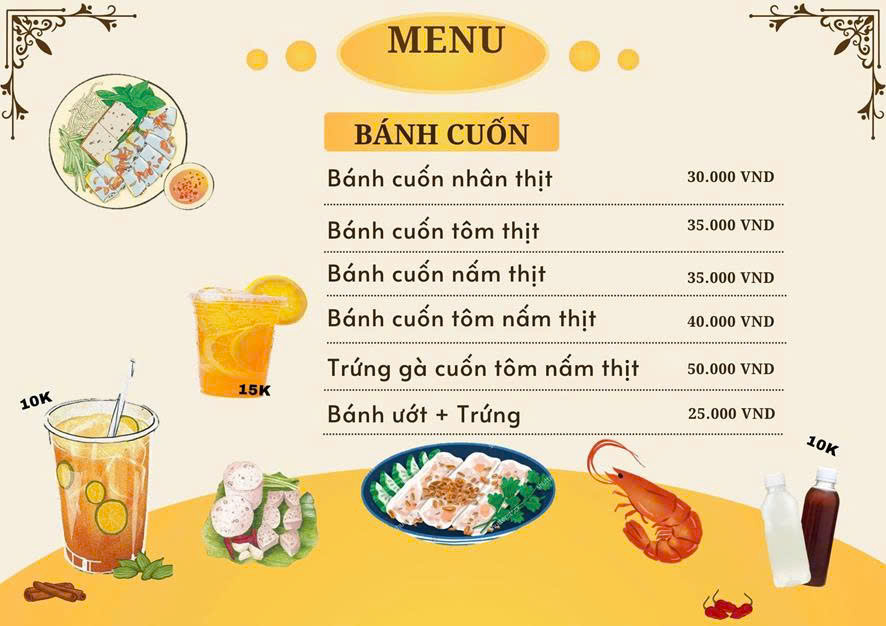

Bánh cuốn Như Thảo
Trong nền ẩm thực Việt Nam, bánh cuốn là một món ăn sáng quen thuộc, vừa no lâu lại có giá cả bình dân, phù hợp với nhiều lứa tuổi khác nhau. Với lớp bánh làm từ bột gạo tráng mỏng mềm, nhân thịt -- nấm -- tôm kết hợp cùng nước chấm gia truyền, bánh cuốn mang đến hương vị đậm đà khó quên. Ngày nay, món ăn này không chỉ xuất hiện tại quán ăn truyền thống mà còn có mặt trên các sàn thương mại điện tử. Trong đó, Bánh cuốn Như Thảo tại Quận 5 nổi bật nhờ hương vị đặc trưng và dịch vụ giao hàng tận nơi.
1. Vì sao nên chọn bánh cuốn Như Thảo?
1.1. Chất lượng món ăn
Bánh cuốn Như Thảo được chuẩn bị kỹ lưỡng ngay từ khâu chọn bột gạo, tráng bánh đến làm nhân. Mỗi suất bánh tuy không quá nhiều nhưng luôn đầy đặn nhân, vỏ mỏng mềm và không gây ngấy. Nhờ được tráng trực tiếp tại chỗ và phục vụ ngay khi còn nóng, món ăn giữ trọn độ béo ngậy, mềm mịn và hương vị đặc trưng. Đây cũng là một trong những quán bánh cuốn nóng hổi ngon ở Quận 5, thích hợp cho bữa sáng nhanh gọn, vừa đủ năng lượng lại giá cả hợp lý.
1.2. Thực đơn đa dạng và giá cả hợp lý phù hợp với nhiều đối tượng khách hàng
Không chỉ có bánh cuốn nhân thịt, tôm, nấm quen thuộc, Bánh cuốn Như Thảo còn phục vụ thực khách với menu đa dạng như: bánh ướt trứng béo ngậy, bánh cuốn chay thanh đạm, hay trứng gà cuốn tôm nấm thịt. Thực khách có thể ăn kèm với chả ho nem để tăng thêm hương vị. Nhờ sự phong phú về món ăn và mức giá linh hoạt, quán dễ dàng tiếp cận nhiều nhóm khách hàng khác nhau -- từ người ăn mặn, ăn chay cho đến những ai muốn đổi khẩu vị bữa sáng. Đây cũng là một trong những địa chỉ ăn sáng ngon ở Quận 5, đặc biệt phù hợp với những thực khách tìm kiếm bánh cuốn chay tại TP.HCM hay muốn thưởng thức hương vị truyền thống trong không gian quen thuộc. Chính vì vậy, Bánh cuốn Như Thảo đã trở thành điểm đến tin cậy của nhiều người ở nhiều độ tuổi và hoàn cảnh khác nhau.
2. Ưu và Nhược điểm khi thưởng thức bánh cuốn trực tiếp và đặt về nhà
2.1. Thưởng thức trực tiếp tại quán
Khi thưởng thức trực tiếp tại quán, thực khách sẽ được ăn bánh cuốn nóng hổi ở Quận 5 vừa tráng xong, kèm theo nước chấm pha sẵn chuẩn vị và nhiều món ăn kèm phong phú, giúp bữa sáng thêm đậm đà và hấp dẫn. Tuy nhiên, vào những khung giờ cao điểm, lượng khách ra vào đông có thể khiến không gian trở nên chật chội, làm trải nghiệm chưa thật sự thoải mái và trọn vẹn.
2.2. Đặt bánh về nhà
Đặt bánh cuốn Như Thảo qua Shopee Food giúp bạn tiết kiệm thời gian di chuyển, đặc biệt phù hợp cho những ngày bận rộn. Khách hàng có thể thoải mái thưởng thức bữa sáng tại nhà mà không cần chen lấn hay chờ đợi vào giờ cao điểm. Ngoài ra, Shopee Food thường xuyên có nhiều chương trình khuyến mãi, freeship giúp tiết kiệm chi phí. Bánh được đóng gói cẩn thận, đảm bảo vệ sinh và vẫn giữ được hương vị nóng hổi khi giao tận tay khách hàng. Hãy đặt ngay hôm nay trên Shopee Food để trải nghiệm bữa sáng nhanh gọn, ngon miệng và nhiều ưu đãi hấp dẫn!
Đặt hàng tại đây
3. Trải nghiệm khách hàng
Đa số khách hàng khi đến quán Bánh cuốn Như Thảo đều hài lòng với chất lượng ổn định: bánh mềm, nhân vừa miệng, nước chấm đậm đà và dễ ăn. Một số ý kiến cho rằng phần ăn hơi ít, nhưng bù lại hương vị ngon, vừa đủ cho một bữa sáng nhanh gọn và tiện lợi. Trên các nền tảng như TikTok và Shopee Food, quán cũng nhận được nhiều phản hồi tích cực, đi kèm những review bánh cuốn ngon Quận 5 từ thực khách. Những đánh giá thực tế này giúp khách hàng mới dễ dàng hình dung về chất lượng món ăn và dịch vụ giao hàng, từ đó yên tâm hơn khi đặt bánh cuốn online tiện lợi tại Như Thảo.
Xem tại đây: https://vt.tiktok.com/ZSDyckWEP/
4. Kết luận
Bánh cuốn Như Thảo là lựa chọn đáng thử cho bữa sáng hoặc bữa ăn nhẹ. Với menu đa dạng, giá cả hợp lý và dịch vụ giao hàng nhanh chóng qua Shopee Food, quán đã trở thành địa chỉ quen thuộc khi nhắc đến bánh cuốn ngon Quận 5. Nếu có thời gian, bạn hãy ghé trực tiếp quán tại 31B Nguyễn Văn Cừ, Phường 1, Quận 5 để thưởng thức bánh nóng hổi tại chỗ. Hoặc chỉ cần vài thao tác đơn giản, bạn đã có thể đặt ngay trên Shopee Food và trải nghiệm hương vị ăn sáng giao tận nơi chuẩn vị, tiện lợi và tiết kiệm.
Thông tin liên hệ:
Hotline: 0768 660 951
Email: banhcuonnhuthao@gmail.com
Nếu bạn muốn tìm một quán ngon hãy xem tại đây: https://quynh200504.github.io/Banhcuonnhuuthao/